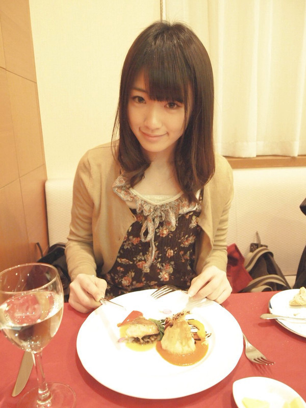
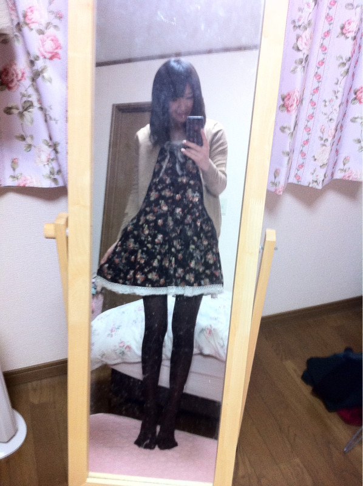

2012/0219Sun（´-`）.｡oO(かずみん×34
こんばんは＊.°
いつもありがとうございます！
みなさんのコメントを見て気づいたの
ですが、前回のブログ
（´-`）.｡oO（かずみん×32
じゃなくて33でしたね(T_T)
ごめんなさい。・゜・(ノД`)・゜・。
本当にいつもありがとうです\(//∇//)\
みなさんの十八番が聞けて
嬉しかった(*^^*)
あとオンタマのフォローも
ありがとうございました(#^.^#)
初めましてのコメントも沢山あって(T_T)
とっても嬉しいです(T_T)(T_T)ハート
これからも、向上心を忘れずに
頑張りますので、
応援よろしくお願いします！
----------------------
今日は家族とディナーに行きました(^^)

久しぶりにゆっくりできてよかった♭°
美味しかったです(*^_^*)
今日のファッション↓

ちなみにワンピースはひなちまと
色違いです(=´∀｀)人(´∀｀=)
春服欲しい～(*^o^*)
とまとのブログみたら
シャーベットカラーが流行るそうなので
取り入れなければ！！！
でもやっぱりレトロなのが好きです。
axes femmeの服が好きです。
でも買うのはアベイルの激安商品！
私はケチです！笑
今日も980円のワンピを買ってしまった！
グリーンの超レトロな可愛い服です！
今度写メ載せちゃいますね♪
レンズも買いました！
まだ取り寄せ中だけど...
望遠です( ´ ▽ ` )ﾉ
これでメンバーの可愛い表情を
撮りまくるぞ(*^◯^*)
---------------------
明日からまた頑張ります！
今週はデビューだ！
そして地方にミニ握手会へ行きます！
福岡、広島、熊本、香川の皆様、
よろしくお願いします（＾＿＾）☆
みなさんも学校やお仕事
頑張ってください。
体調には充分気をつけて。
受験生のみなさんへ
どうか良い結果が出ますように...
それではまた(*^^*)
乃木どこ見てから寝ます
おやすみなさいU^ェ^U
高山一実
コメント(246)
今日は家族とゆっくりできたみたいで
よかったです
そして、今週デビューですね
いよいよです
全国へのPR活動頑張ってください
たーちゃんより
p.s今日は短めでごめんね
かずみん可愛い
おしゃんてぃーな店に
行ったんですね！
いいなぁ
香川行く予定なんで
その時はヨロシクね
ちゃんと｢でここすり｣
っていうからねー。
乃木どこ見てます(^_^)/
僕も今週楽しみでーす
おやすみ
さっき前のブログにもコメントしたよ
俺も春服欲しいな(^-^)/
冬服買っちゃったけどww
アベイル！ツボ娘のときに言ってたケチさ出してきたね(笑)
やまとまとのブログを参考にか。 やっぱりメンバー全員のブログは見るんかな？
私服可愛いね!!
てか、俺こんな高そうなお店行ったこと無いｗｗｗ
もうすく発売^^
新潟来て欲しかったなぁ･･･
おやすみなさい
はやく福岡にきてー
そのノリが好きっす(^^)
おやすみ☆
更新ありがとうぉぉぉ＼(^ー^)／
体調大丈夫そうで良かった〜
私事ですが先ほどホテルに着きました。
ディナーいいね
かずみんまさかのお嬢様(・・?)
宮城では乃木坂って、どこ？やってないみたい(´・ω・｀)
では、おやしゅみん◇...(°ω°P).p
家族でディナーいいねー、なんか腹減ってきたよ(ｰｰ;)笑
そして握手会頑張ってー！
いつか東北にも来てねー！笑
最近、みんな忙しそうだったもんね^^*♪
お疲れっす(=´∀｀)
今、乃木どこ見たよ(^皿^)v
家族でゆっくりできて良かったね♪
何か今日のかずみんはすっごく大人っぽく見えるよ(*^^*)
ついにデビューウィークだね！
ミニ握手会は残念ながらちょっと遠くて行けないけど、またかずみんに会えるの楽しみにしてるから(^^)
ではでは明日もまた頑張ろ〜!!
ティッシュ全部配り終わって良かったね(o^^o)
CD発売まで後2日！
楽しみだよ～＼(^o^)／
かずみんも体調に気を付けてね！
短いコメントでごめんね(>_<)泣
ってかワンピース似合ってるね♪
やっぱかずみんはお洒落さんだね(*￣∇￣)
個別行くんでよろしく( *・ω・)ノ
俺も食べたいー笑
望遠鏡って星見るの好きなんだね
自分は空を見上げることが雨降った時くらいだから
今度夜の星も見上げてみよ！
今週は勝負の週だね♪
がんばれ(^^)
乃木どこ見たよー(^∇^)
かずみん待ち受けにしてるけどいいよね？(笑
ティッシュ配りではリーダーシップ的な感じ出てて頑張ってたね(^o^)
お仕事ガンバレー
ディナーとかオシャレですな(^^♪
料理めっちゃうまそうやし！！
彼女と一緒にオシャレなディナーを食べてみたいな笑
最近ほしいものがいっぱいある(>_<)
服に、靴に、イヤホンに、スーツに‥‥‥
あげてったらきりがないよ((+_+))
物欲さんが心の底からあふれ出できます笑
今週はいよいよデビューだね！！
たくさんのメディアに出演するやろうから、ばっちりチェックしときますm(__)m
ミニ握手会にいけないのがすごい残念(;_:)
いつか和歌山で握手会をしてくれ～～～～
やっほー
高山さーん
私服オシャレだね(￣ー￣)
高級そうな食事…
高山さんはお金持ちなのか!?
てことは高山お嬢さんじゃないか(◎o◎)
なんかタメ口いってすいません…(笑)
乃木どこ見ました!
かずみん可愛かった☆
あと
今日のファッションの
写メの件について
めちゃめちゃ
スタイル良いね(*^-^)ﾆｺ
握手会テスト前で
行けないけど
かずみんファイト!(b^ー°)
かずみん､それは
ケチやなくて
｢買い物上手｣て言うんや!
ちなみに今日
食料買い求めてたら
サンキューセールで
パン10個自由に選んで
390円やったよ＼(^^)／
今日､明日生きてける←
一人暮らしには
ありがたすぎるぜ(笑)
乃木どこ見終わったなう!!
お疲れさまでした(><)
私兵庫県民ねんけど…
広島行きたいな～
かずみん(*^^*)
3回目のコメントです(^_-)
私服可愛いっ☆★
お花柄の洋服とか、ワンピース、私も好きでよく着るよ＼(^o^)／
春はパステルカラーの小花柄がおすすめ♪♪
あとあと、シフォン生地っ(o^^o)
ふわふわしてて大好き(*^^*)
握手会の時の服装は私服なのかな??
楽しみです*･゜ﾟ･*:.｡..｡.:*･'(*ﾟ▽ﾟ*)'･*:.｡. .｡.:*･゜ﾟ･*
とりあえずティッシュ配りお疲れ様です
前名古屋に来たとき行きましたよぉ
次は握手会ですかね
楽しみだぁ～
とりあえずティッシュ配りお疲れ様です
前名古屋に来たとき行きましたよぉ
次は握手会ですかね
楽しみだぁ～
乃木どこ見たよ！
やっぱりティッシュ配りは大変だったね…
流石としか言えないわ
これは、確実に売れると思うよ！
お疲れ様でした^^
caucasia☆tanaka
やっぱりかずみん普通にオシャレやなぁ
正直服の値段なんて聞かれん限り分からへんから安くて可愛いなんてサイコーやんなぁ笑
僕もよく季節の移り目とかに服買いに行ったらちょっと値段する服も
半額とかになったりするんで
季節の移り目が狙い目カナって
思って買ってるよぅ笑
ちなみに僕は1年中タンクトップを来ています
タンクトップが似合う人ってある意味オシャレなんじゃないカナって思うんで
頑張ってもっとマッチョになります笑
ゴメンなさいあんまりかずみんには関係ないですね
シャーベットカラーってどんな色ですかぁ？
今友達とめっちゃ香川に行こうか迷ってます
んでもかずみんに会いに行きたいし…
よし行こう
嵐が来ても行きますよ笑
グリーンの超レトロな可愛い服の写メ待ってます
……映ってなかった
かずみん私服可愛い
似合ってるよ
かずみんって普段髪の毛縛ったりしないの
いいね(^O^)/
家族と仲良し
俺は最後に行ったのいつだっけ（笑
今週からまた忙しくなるけど無理せずにやってね
最近、毎回ｺﾒしてるけど覚えてくれてるかな？？
かずみんの一眼でのメンバー激写期待してますよ
一番はかずみんとメンバー写ってるの期待だけどそこはメンバーブログに乱入してもらって
プロのカメラマンさんでは撮れないメンバーの自然な表情期待してます
色んな所に言って握手会楽しんでその場所でしか体験出来ないことをしてきてきて下さい！
何か１つ方言覚えて帰ってくるとかすると面白いですよ
どこ見たよ~♩
まだまだ寒いので体調に気を付けてね！！
CDすべて予約したので楽しみです。
そして早く握手したいです☆*:.｡. o(≧▽≦)o .｡.:*☆
僕は 昨日 dinner行きました(^-^)
おいしかったです
私服めっかわですね('-^*)
乃木どこ見終わったけどお疲れ様でした
とても大変そうで 泣きそうでした(>_<)
ミニ握手会遠くて行けません(泣)
栃木にもきてー(笑)
では おやすみなさい
メンバーへの気配りが出来ているところ
（選抜を選んでいる時、選ばれている人に対しておめでとうと言ってる姿や、ティッシュ配りで西野さんをフォローしている姿等）
素敵ですね。
高山さんが山口百恵さんや中森明菜さんのような歌やパフォーマンスで人を引き付けられる芸能人になるのを楽しみにしています。
そして美味しそうな料理(｀◇´)ゞ
お腹好いてきましたw
かすみんﾜﾝﾋﾟｰｽ似合うね！
早く一実ちゃんとお話ししたい！
コウヘイより(*≧∀≦*)
写真って素っぴんだよねぇ～
うん、素っぴんも良いｗ
今週は大忙しだけど体調には気をつけてね
そしていつか地元千葉で握手会をｗｗｗ
かずみんやっぱり大人っぽい
良い意味で18には見えない
ディナーオシャすぎる！
私服も可愛い(≧▽≦)
安くて可愛い服買えたね！
望遠買ったのか＼(^o^)／
みんなの可愛い表情見たいな
そしたら写メとか載せてほしい
かずみんも体調気をつけてよ？
風邪とかインフル流行ってるし
自分は良いけどかずみん達が
なったら大変だもん(>_<)
乃木どこ見たよー
PR活動お疲れ様だね
寒い中大変だったよね
これで１位取れたら最高だな！
なかなかそういう店が似合う子いないけど、かずみんは似合う！
2年後になったらグラスにワイン入ってるんだろうね
リッチな店の写真の後で、980円のワンピっていうギャップが最高だよ笑
そういうところまじ好き☆
では、かずみんも体調に気をつけて頑張ってね！
でもアベイルｗｗｗ
現役アイドルからアベイルの名が聞けるとは笑
かずみんの実家はやっぱり（茨城住みの俺と同じく）田舎なんだな～と改めて実感しましたｗ
かずみんかわいい!!
推し変...はまだしません!!泣
乃木どこ観ました～。ティッシュ配りお疲れ様でしたー。全部配れて良かったねー(^^)
最近かずみんのファンになりました！
ぐるぐるカーテンのCDも予約したので、特典映像とか凄い楽しみです！
握手会にも行きたいと思ってるで、会える日を楽しみにしていまーす(^_^)/
まだまだ寒いので、体には気をつけて！ではでは失礼します！
↑
ここまでほとんど満足にオフを楽しむ時間が、なかなか無かっただろうから、久々に好い団欒が出来たみたいでよかったね～♪
なんか、凄い大人っぽい雰囲気でディナーを楽しむ姿は、かずみんが成長した証なのかもしれないよ！
いよいよ２日後に迫ったＣＤデビュー。 とうとう新たな第１歩を踏み出すんだなと思うと、結成から見守らせていただいた身としては、胸に熱くこみ上げてくるものが…
このまま遠い存在になってしまうのは、正直言ってまだまだ淋しいから、もう暫くは近い… いやいや、これからも身近に楽しみ会える乃木坂で居てよ！
ファンと近くて、好い関係がお互いに築ける乃木坂であることを、これからも期待してるので、ぜひ頑張ってくださいね。
そして、いつも強く応援してくれてる、家族みんなを大切にしてあげてください♪
☆レンズも買いました！
まだ取り寄せ中だけど…
望遠です( ´ ▽ ` )ﾉ
これでメンバーの可愛い表情を
撮りまくるぞ(*^◯^*)
↑
お年玉の有効活用が出来たみたいだね！ かずみんカメラマンの腕前、楽しみにしてるよ♪
☆そして地方にミニ握手会へ行きます！
福岡、広島、熊本、香川の皆様、
よろしくお願いします（＾＿＾）☆
↑
４箇所全部は行けないけど、実際に２２・２３日と熊本へ用事が有るので、それに併せて熊本＆福岡はお邪魔するから、握手＆肘こすりをよろしくね！ 久しぶりに会えるのは、やっぱり嬉しいな♪
ＴＡＫＥ＠１９７３
家族とディナーいいね。美味しそう～
俺もアベイルで買ったりするけど、値段ではなくて
いかに本人に似合うかだと思うから、全然気にしないで
大丈夫じゃないかな
望遠レンズ買ったんね。たくさんメンバー撮っちゃってね
かずみんも体調には気をつけてね。
今日も一日ファイト
突然やけど・・・
乃木坂で流行らしてほしい言葉があんねん！
チャラリー鼻から牛乳～ です！
使い方は、やってしまった！
って時。例えば、あ！ブログの更新忘れてた！
チャラリー鼻から牛乳～ みたいな
生駒ちゃんとかに言ってみて！
ぜったハマりまっせ！
というわけで、これからもお仕事がんばってね☆
服は安くても上手く着こなすのが本当のおしゃれさんだと思うよ！僕も普段は安いのばっかり。でも、おしゃれではないけどね(笑)
ではまた。蛇(じゃ)∫~
ディナーうらやましい♪
素敵な時間過ごせてなにより( ´ ▽ ` )ﾉ♪
ワンピース可愛くてやられた照
春服が欲しくなる季節になりましたな笑
今度また春服ゲットしたらみせてね♪
今週からデビューweekですが
がんばっていきまっしょい( ´ ▽ ` )ﾉ
番号間違えちゃうところもかわいいよ～
かずみんが歌うロックンロール・ウィドゥ聴きたいな～
前回のコメントするの忘れてたｗ
ディナーおいしそう♪
てか高そうｗ自分はそんな感じのめったに行かないわ(^_^;)
これから握手会とかあるし、ゆっくりできてよかったね！
かずみんやっぱおしゃれだね♪
脚長いし細い！！
アベイルとか自分の家の近くにもあるｗ
でも最近は全然行ってないよｗ
安い服でおしゃれとか自分の服もコーディネートしてほしいよ(>__<)
かずみんいろいろありがとう♪
大事な時期だし体調に気をつけてね！


{kind=link}
{kind=link}
私服もおっしゃれ～
乃木どこの時の私服もおしゃれだったもんね
かずみんにおしゃれを教わりたい